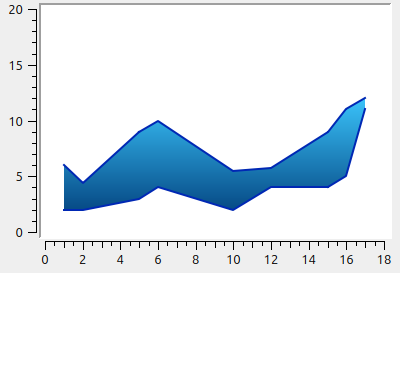
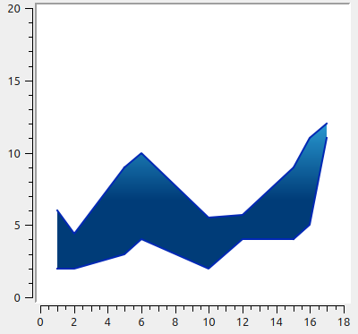
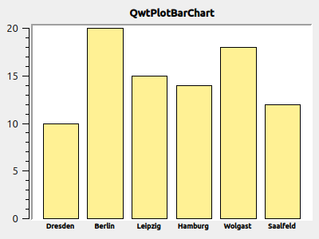
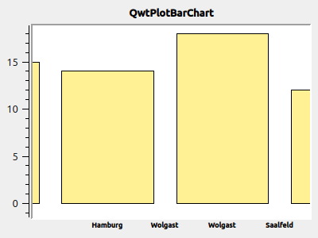

Über dieses Handbuch
Dieses Projekt ergänzt die API-Dokumentation zur Qwt-Bibliothek und bietet sowas wie ein Programmiererhandbuch mit vielen Details zu den Internas der Bibliothek. Der Fokus liegt aber ganz klar auf der QwtPlot Diagrammkomponente.
Das ist übrigends schon die 2. Auflage (komplett neu überarbeitet), weil es zum Zeitpunkt der ersten Ausgabe noch kein tolles AsciiDoc gab und ich irgendwie beim Textschreiben hängengeblieben bin.
Die englische Version und die PDF-Variante gibt’s hier: https://ghorwin.github.io/qwtbook.
Die Texte und Bilder stehen unter der Creative-Commons BY-NC Lizenz (siehe Lizenztext im Qwt Handbuch Repository https://github.com/ghorwin/QwtBook), können also frei verwendet, modifiziert und angepasst werden, aber bitte nicht publiziert oder zum Training von kommerziellen KI-Systemen benutzt werden. Alle Quelltextbeispiele, sowohl im Text, als auch in den herunterladbaren Tutorial/Beispiel-Quelltextarchiven, stehen unter der MIT-Lizenz und können damit in open-source wie auch kommerziellen Projekten genutzt werden.
|
Häufig wird das |
Viel Spaß bei der Lektüre - und falls noch Inhalte fehlen, einfach Geduld haben und später wiederkommen (oder im Github-Repo ein Issue anlegen). Und schaut Euch vielleicht auch meine anderen Tutorials unter https://schneggenport.de an!
— Andreas Nicolai
1. Überblick über die Qwt Bibliothek
Qwt - Qt Widgets for Technical Applications ist eine Open-Source Bibliothek für technische Anwendungen und stellt
bestimmte Widgets für Anzeigen und Kontrollkomponenten bereit. Die wohl wichtigste Komponente der Qwt Bibliothek ist das QwtPlot,
eine sehr flexible und mächtige Diagrammkomponente.

Die Qwt Bibliothek steht unter einer Open-Source-Lizenz, wurde und wird aktiv vom Entwickler Uwe Rathmann gepflegt und wird auf SourceForge.net gehostet:
1.1. Entwicklungsgeschichte
-
die erste Version der Qwt-Bibliothek stammt noch aus dem Jahr 1997 von Josef Wilgen
-
seit 2002 wird die Bibliothek von Uwe Rathmann entwickelt und gepflegt
-
Version 5 ist wohl am weitesten verbreitet (erstes Release vom 26.02.2007)
-
Version 6 (erstes Release vom 15.04.2011, kein Qt3 Support mehr) enthält wesentliche API-Änderungen
-
aktuelle stabile Version 6.3.0 (Stand Mai 2025)
-
im trunk gibt es zum Teil bereits wesentlich mehr und fortgeschrittene Funktionen
1.1.1. Download der Bibliothek
Die Qwt Bibliothek kann von der Qwt SourceForge Projektseite als Quelltextarchiv geladen werden. Unter Linux wird Qwt bei vielen Distributionen als Paket gehalten. Genau genommen gibt es mehrere Pakete für die unterschiedlichen Qwt-Bibliotheksversionen bzw. Qt Versionen. Details zur Installation und Verwendung der Bibliothek gibt es im Kapitel 15.
1.2. Widget-Konzept und Erscheinungsbild
Die Qwt Bibliothek liefert Komponenten, welche analog zu den normalen Qt-Widgets in Desktopanwendungen verwendet werden können. Die Komponenten verwenden die Qt Palette, sodass die Qwt-Widgets in die jeweilige Oberfläche passen. Dadurch integrieren sich die Widgets nahtlos in Programmoberflächen. Einzelne Komponenten des QwtPlot unterstützen auch Styles. So ermöglichen z.B. Abrundungseffekte beim Plot-Widget das Immitieren klassischer Anzeigen.

Details zum Styling und zur Anpassung des Erscheinungsbildes sind im Kapitel 12 zu finden.
1.3. Besitzer/Eigentümer-Konzept des QwtPlot-Widgets
Eine grundlegende Eigenschaft der QwtPlot-Klasse ist die Besitzübername hinzugefügter Elemente. Dies gilt allgemein für alle Elemente des Plots (Linien, Marker, Legende, …). D.h. nach Übertragung der Eigentümerschaft kümmert sich das QwtPlot um das Aufräumen des Speichers.
Einmal hinzugefügte Elemente werden nicht wieder losgelöst werden (bzw. nur über einen Trick, wie im Kapitel 14.1 beschrieben wird). Daher ist es sinnvoll, bei veränderlichen Diagrammelementen einen Mechanismus zur jeweiligen Neuerstellung eines Zeichenobjekts vorzusehen (Factory-Konzept).
1.4. Zeichenobjekte und deren Achsenabhängigkeit
Ein wesentliches Designmerkmal beim QwtPlot ist die Möglichkeit, beliebige Zeichenobjekte (Kurven, Marker, Legende, …) dem Plot zu übergeben. Damit sich diese Zeichenobjekte (engl. PlotItem) am Koordinatengitter ausrichten können, wird ihnen eine Achsenabhängigkeit gegeben. Dadurch erhalten diese Zeichenobjekte eine Information, wann immer sich die Achsenskalierung ändert (durch Zoomen, oder Änderung der Wertebereiche etc.).
Diese Funktionalität definiert die zentrale Bedeutung der (bis zu) 4 Achsen im Diagramm. Deswegen sind diese auch fest im QwtPlot verankert und werden nicht wie andere Zeichenobjekte beliebig hinzugefügt.
1.5. Vererbungskonzept
Grundsätzlich ist das QwtPlot und die beteiligten Klassen auf maximale Anpassungsfähigkeit ausgelegt, d.h. es wird (fast) überall Polymorphie unterstützt. Wenn die eingebaute Funktionalität nicht zureichend ist, kann man einfach immer die entsprechende Klasse ableiten und die jeweils anzupassende Funktion re-implementieren und verändern. Dies wird anhand von Beispielen in den individuellen Kapiteln des Handbuchs beschrieben.
1.6. Qwt Designer Plugins
Die Qwt Bibliothek bringt Plugins für Qt Designer bzw. Qt Creator mit, welche das Einfügen von Qwt-Komponenten in ui-Dateien erleichtert. Es lassen sich jedoch keine QwtPlot-Eigenschaften festlegen oder Kurven hinzufügen. Die eigentliche Anpassung und Ausgestaltung des Plots erfolgt im Quelltext.
|
Die API der Qt Designer Plugins hat sich in jüngeren Qt Creator-Versionen geändert, weswegen die Qwt Designer Plugins mit aktuellen Qt und Qt Creator Versionen nicht mehr funktionieren selbst wenn man die mit den passenden Bibliotheksversionen kompiliert. |
Auch deswegen wird die Konfiguration und Anpassung des QwtPlot in diesem Handbuch ausschließlich durch normale API-Aufrufe demonstriert.
|
Soll das |
2. Erste Schritte und ein interaktives Diagramm
Um mit der Qwt-Bibliothek warm zu werden, erstellen wir in einem einfachen Beispiel ein interaktives Diagramm mit der QwtPlot-Komponente.
Der komplette Beispielquelltext ist als 7z-Archiv herunterladbar: tutorial1.7z
2.1. Programmrohbau
2.1.1. QMake Projektdatei
Wir beginnen mit der qmake-Projektdatei, in der wir den Pfad für die Header-Dateien der Bibliothek und die zu linkende Bibliothek festlegen. Hier gehe ich davon aus, dass Qwt aus dem 6.3.0er Quelltextarchiv gebaut und lokal in die Standardverzeichnisse (C:\qwt-6.3.0 unter Windows und /usr/local/qwt-6.3.0 unter Linux/Mac) installiert wurde. Infos über das Compilieren der Bibliothek aus dem Quelltext und Installation gibt es in Kapitel 15.
TARGET = Tutorial1
QT += core gui widgets
CONFIG += c++11
win32 {
# Pfad zu den Qwt Headerdateien hinzufügen
INCLUDEPATH += C:/qwt-6.3.0/include
CONFIG(debug, debug|release) {
QWTLIB = qwtd
}
else {
QWTLIB = qwt
}
# Linkerpfad
LIBS += -LC://qwt-6.3.0/lib -l$$QWTLIB
}
else {
# Pfad zu den Qwt Headerdateien hinzufügen
INCLUDEPATH += /usr/local/qwt-6.3.0/include/
# Linkerpfad, unter Linux wird standardmäßig nur die release-Version der Lib gebaut und installiert
LIBS += -L/usr/local/qwt-6.3.0/lib -lqwt
}
SOURCES += main.cppDies ist eine .pro-Datei für eine Qwt-6.3.0-Installation aus dem Quelltext mit Standardeinstellungen (siehe Kapitel 15.2).
|
Beachte, dass die im Debug-Modus kompilierte Qwt-Bibliothek ein angehängtes d hat. Unter Linux wird standardmäßig nur die release-Version gebaut und installiert, daher braucht man hier die Fallunterscheidung nicht. |
2.1.2. Minimalistisches Hauptprogramm
Für die Verwendung des QwtPlot braucht man nur eine sehr minimalistische main.cpp.
#include <QApplication>
#include <QwtPlot>
int main(int argc, char *argv[]) {
QApplication a(argc, argv);
QwtPlot plot;
plot.resize(800,500);
plot.show();
return a.exec();
}|
Wenn man das Programm compiliert hat und ausführen will, beklagt sich Windows über eine fehlende DLL.
Dazu in den Projekteinstellungen, unter "Ausführen", im Abschnitt "Umgebung" die PATH-Variable bearbeiten und dort den Pfad |
Das Programm zeigt ein ziemlich langweiliges (und hässliches) Diagrammfenster (später wird das noch ansehnlicher gestaltet).

|
Ein Hinweis zu den Header-Dateien der Qwt-Bibliothek. Analog zu Qt Klassen werden die Qwt-Klassen über den gleichnamigen Header eingebunden, also: Diese Header-Dateien sind aber nur Wrapper um die eigentlichen Include-Dateien, mit dem Benennungsschema: In früheren Versionen der Qwt-lib (auch der Debian-Paket-Version |
2.2. Diagrammelemente hinzufügen
2.2.1. Linie hinzufügen
Als erstes fügen wir eine Linie bzw. Diagrammkurve hinzu (Header QwtPlotCurve bzw. qwt_plot_curve.h):
#include <QApplication>
#include <QwtPlot>
#include <QwtPlotCurve>
int main(int argc, char *argv[]) {
QApplication a(argc, argv);
QwtPlot plot;
plot.resize(500,300);
// etwas Abstand zwischen Rand und Achsentiteln
plot.setContentsMargins(8,8,8,8);
// Hintergrund der Zeichenfläche soll weiß sein
plot.setCanvasBackground( Qt::white );
// Daten zum Darstellen einlesen
QVector<double> x, y;
QFile f("spektrum.tsv"); // Datei enthält 2 Spalten
f.open(QFile::ReadOnly);
QTextStream strm(&f);
strm.readLine(); // Kopfzeile überspringen
while (!strm.atEnd()) {
double xval, yval;
strm >> xval >> yval;
x.append(xval);
y.append(yval);
}
QwtPlotCurve *curve = new QwtPlotCurve();
curve->setPen(QColor(180,40,20), 0);
curve->setTitle("Gamma-Spektrum");
curve->setRenderHint( QwtPlotItem::RenderAntialiased, true ); // Antialiasing verwenden
curve->setSamples(x, y);
curve->attach(&plot); // Plot takes ownership
plot.show();
return a.exec();
}Im erweiterten Hauptprogramm wird zunächst der Header für die QwtPlotCurve eingebunden. Das Kurvenobjekt selbst wird mit new auf dem Heap erstellt. Die Daten der Kurve lesen wir aus einer Textdatei (2 Spalten, mit Kopfzeile) aus. Die Datei spektrum.tsv ist im Archiv des Tutorialquelltextes enthalten.
|
Grundsätzlich gilt beim |
Attribute wie Linienfarbe, Titel (wird später in der Legende angezeigt), und Antialising werden gesetzt (im Kapitel 5 werden alle Eigenschaften von Linien im Detail erläutert).
Die Funktion setSamples() setzt die Daten der Linie. Wichtig ist hier, dass die übergebenen Vectoren die gleiche Länge haben. Es handelt sich um eine parametrische Kurve, d.h. weder x noch y Werte müssen monoton sein oder sonstwelchen Regeln folgen. Jedes x,y Wertepaar definiert einen Punkt und diese Punkte werden mit der Linie verbunden.
Die Funktion attach() fügt das QwtPlotCurve-Objekt zum Diagramm hinzu.
|
Beim Hinzufügen der Linie mittels |
Zusätzlich zu dem Code, welcher die Linie hinzufügt, wurden noch 2 kleine Anpassungen am Erscheinungsbild vorgenommen:
-
Ränder wurden mittels
setContentsMargins()hinzugefügt (siehe auchQWidgdet::setContentsMargins()) -
der Hintergrund der Zeichenfläche (canvas) wurde weiß gefärbt.
Das Ergebnis sieht schon eher nach Diagramm aus.
2.2.2. Legende hinzufügen
Als nächstes wird eine Legende eingefügt (Header QwtLegend bzw. qwt_legend.h):
// Legende anzeigen
QwtLegend * legend = new QwtLegend();
QFont legendFont;
legendFont.setPointSize(8);
legend->setFont(legendFont);
plot.insertLegend( legend , QwtPlot::BottomLegend); // plot takes ownershipAuch hier wird oben wieder der Header für die Klasse QwtLegend eingebunden.
Die Legende bekommt hier noch einen veränderten Font. Das weitere Anpassen der Legende wird in Kapitel 7 beschrieben.
Die Legende kann links, rechts, oberhalb oder unterhalb der Zeichenfläche liegen, oder in der Zeichenfläche selbst. Die Platzierung wird beim Aufruf von insertLegend() festlegegt.
Das Plot nimmt beim Aufruf von insertLegend() wiederum Besitz vom Legendenobjekt und kümmert sich um das Aufräumen des Speichers.
2.2.3. Diagrammtitel hinzufügen
// Titel hinzufügen
QwtText text("Gamma-Spektrum");
QFont titleFont;
titleFont.setBold(true);
titleFont.setPointSize(10);
text.setFont(titleFont);
plot.setTitle(text);Die Klasse QwtText (Header QwtText bzw. qwt_text.h) kapselt einen QString und ergänzt Funktionalität zum Rendern von mathematischen Symbolen mittels MathML (siehe Kapitel 10.1).
2.2.4. Diagrammraster hinzufügen
Gitterlinien werden durch das Zeichenobjekt QwtPlotGrid gezeichnet (Header QwtPlotGrid bzw. qwt_plot_grid.h):
// Haupt- und Nebengitter anzeigen
QwtPlotGrid *grid = new QwtPlotGrid();
QPen gridPen(Qt::gray);
gridPen.setStyle(Qt::DashLine);
grid->setMajorPen(gridPen);
// Minor grid
grid->enableYMin( true );
gridPen.setColor(Qt::lightGray);
gridPen.setStyle(Qt::DotLine);
grid->setMinorPen(gridPen);
grid->attach( &plot ); // plot takes ownershipDas Raster selbst kann hinsichtlich der Stifts (QPen) für das Haupt- und Nebengitter angepasst werden. Die Funktion enableYMin() schaltet das Nebengitter für die Y-Achse ein.
Wie auch bei den Plotkurven übergibt attach() das QwtPlotGrid Objekt an das QwtPlot, welches sich dann um die Speicherverwaltung kümmert.
|
Ein Raster wird standardmäßig an eine x- und y-Achse gebunden, wobei man aber auch die Gitterlinien für eine der Achsen ausblenden kann. Wenn man z.B. ein Diagramm mit 2 y-Achsen hat und für jede ein Gitterraster anzeigen möchte (auch wenn das meistens verwirrend aussieht), dann braucht man zwei |
Inzwischen sieht das Diagramm schon ganz ansehnlich aus.
2.2.5. Achsenkonfiguration
Das QwtPlot hat 4 Achsen eingebaut, genannt:
-
QwtPlot::yLeftundQwtPlot::yRight -
QwtPlot::xBottomundQwtPlot::xTop
Standardmäßig sind die Achsen xBottom und yLeft sichtbar, wie im bisher verwendeten Plot.
Jedes Zeichenelement im Plot (Kurven, Marker, …) wird einer oder mehrerer Achsen zugeordnet. In unserem Einführungsbeispiel verwendet die QwtPlotCurve standardmäßig die Achsen xBottom und yLeft.
Die Achsen können wie folgt konfiguriert werden.
// Achsen formatieren
QFont axisFont;
axisFont.setPointSize(8);
axisFont.setBold(true);
QFont axisLabelFont;
axisLabelFont.setPointSize(8);
// X-Achse
QwtText axisTitle("Kanal");
axisTitle.setFont(axisFont);
// Titel Text und Font setzen
plot.setAxisTitle(QwtPlot::xBottom, axisTitle);
// Font für Achsenzahlen setzen
plot.setAxisFont(QwtPlot::xBottom, axisLabelFont);
// Y-Achse
axisTitle.setText("Ereignisse");
plot.setAxisTitle(QwtPlot::yLeft, axisTitle);
plot.setAxisFont(QwtPlot::yLeft, axisLabelFont);Der Titel jeder Achse wird wiederum über ein QwtText-Objekt (enthält Text und Font) gesetzt.
Der Font für die Zahlen an den Achsen selbst wird über setAxisFont() geändert.
Die Achsen selbst lassen sich vielfältig anpassen, siehe Kapitel 9.
Die Achsen passen sich standardmäßig automatisch an den Wertebereich der angezeigten Kurven an. Das kann man natürlich auch ändern, siehe Kapitel 9.
2.2.6. Logarithmische Achsen
Das QwtPlot kann auch logarithmische Achsen verwenden. Dazu muss man eine anderen Skalenberechnungsklasse einbinden, die QwtLogScaleEngine (Header QwtLogScaleEngine bzw. qwt_scale_engine.h):
// Logarithmische Y-Achse
QwtLogScaleEngine * logScale = new QwtLogScaleEngine();
plot.setAxisScaleEngine(QwtPlot::yLeft, logScale); // plot takes ownership
// manuelle Achsenlimits festlegen, da autoscale bei log-Achsen nicht sinnvoll funktioniert
plot.setAxisScale(QwtPlot::yLeft, 1e-3,1000);Beim Aufruf von setAxisScaleEngine() nimmt das Plot wiederum das Objekt in Besitz und kümmert sich dann um das Speicheraufräumen.
Kapitel 9 beschreibt die Details der ScaleEngine und gibt weitere Beispiele.
2.2.7. Markierungslinien
Ein weiteres Zeichenelement, das man hin und wieder braucht, sind horizontale oder vertikale Markierungslinien. Beispielhaft fügen wir eine solche Linie mal dem Plot hinzu (Header QwtPlotMarker bzw. qwt_plot_marker.h):
// Vertikale, gestrichelte Plot-Markierung einfügen
QwtPlotMarker * marker = new QwtPlotMarker("207,50 keV");
marker->setLabelOrientation(Qt::Vertical); // Vertikale Linie
marker->setLabelAlignment(Qt::AlignRight | Qt::AlignBottom); // Label unten und rechts von der Linie
marker->setValue(36, 0); // bei vertikalen Linien muss die x-Koordinate festgelegt werden
QPen markerPen(QColor(40,60,255));
markerPen.setStyle(Qt::SolidLine);
marker->setLinePen(markerPen);
marker->setLineStyle(QwtPlotMarker::VLine);
marker->setLabel(QwtText("207,50 keV"));
marker->attach(&plot); // plot takes ownershipAuch bei den Markern gibt es vielfältige Einstellungsmöglichkeiten, siehe Kapitel 8.
Nun ist das Diagramm selbst fertig und wir widmen uns der Nutzerinteraktion.
2.3. Interaktion mit dem Diagramm
Das QwtPlot bietet die üblichen Interaktionsmöglichkeiten für den Anwender, wie z.B. Herein- und Herauszoonmen, oder Verschieben des Plotausschnitts.
2.3.1. Zoomfunktionalität mit QwtPlotZoomer
Die Zoom-Funktionalität wird über die Klasse QwtPlotZoomer hinzugefügt (Header QwtPlotZoomer bzw. qwt_plot_zoomer.h):
// Zoomer hinzufügen
// Achtung: NICHT QwtPlot selbst als 3 Argument übergeben, sonder das canvas()
QwtPlotZoomer * zoomer = new QwtPlotZoomer(QwtPlot::xBottom, QwtPlot::yLeft, plot.canvas()); // plot takes ownership
zoomer->setTrackerMode( QwtPlotPicker::AlwaysOn ); // Kurvenvwerte unterm Cursor anzeigenWenn man mit der Maus über das Diagramm fährt, sieht man bereits einen veränderten Cursor und dank des Aufrufs setTrackerMode(QwtPlotPicker::AlwaysOn) sieht man nun auch die x- und y-Werte (des Achsen xBottom und yLeft) unter dem Cursor.
Hineinzoomen kann man, indem man die Linke Maustaste gedrückt hält, und ein Zoom-Rechteck aufzieht. Das kann man auch mehrmals hintereinander machen. Das QwtPlot merkt sich intern diese Zoomstufen. Herauszoomen kann durch Klick auf die rechte Maustaste, wobei immer eine Zoomstufe hinausgezoomt wird.
|
Die äußerste Zoomstufe wird im Konstruktor der |
Im Quelltext gibt es noch eine Besonderheit. Während die bisherigen Plotelemente immer mit Memberfunktionen der QwtPlot-Klasse hinzugefügt wurde, bzw. mittels attach(), wird das Zoomerobjekt analog zu Qt Klassen als Kindobjekt der Zeichenfläche gegeben und registriert sich darüber als interaktives Element bei Plot.
|
Es ist wichtig darauf zu achten, dass man beim Konstruktor der Klasse Im Konstruktor der |
Damit der Zoomer weiß, welche Achsen beim Zoom manipuliert werden sollen, muss man die x- und y-Achse im Konstruktor angeben. Möchte man z.B. beide y-Achsen gleichzeitig zoomen, braucht man zwei QwtPlotZoomer-Objekte.

2.3.2. Plotausschnitt verschieben mit QwtPlotPanner
Wenn man Ausschnitt eines hineingezoomten Plots interaktiv verschieben möchte, kann man den QwtPlotPanner hinzufügen (Header QwtPlotZoomer bzw. qwt_plot_zoomer.h):
// Panner hinzufügen, wie auch beim PlotZoomer muss das Canvas-Objekt als Argument übergeben werden
QwtPlotPanner * panner = new QwtPlotPanner(plot.canvas()); // plot takes ownership
panner->setMouseButton(Qt::MidButton); // Mittlere Maustaste verschiebtWie beim QwtPlotZoomer wird das Objekt als Kindobjekt des Canvas-Widgets hinzugefügt. Üblich ist das Verschieben von Bildschirminhalten mit gedrückter mittlerer Maustaste, also legt man das mit setMouseButton() fest.
Damit ist das Einstiegstutorial beendet. Mit dem QwtPlot kann man bereits mit wenigen Handgriffen ein voll funktionsfähiges und interaktives Diagramm erstellen. In diesem Tutorial war das QwtPlot gleichzeitig das Anwendungs-Widget. Wenn man das QwtPlot aber in bestehende Designer-Formularklassen einfügen will, gibt es verschiedene Techniken:
-
die Verwendung von Platzhalter-Widgets
-
die Einbindung von Qt Designer Plugins für die Qwt Bibliothek
Diese Methoden sind in Kapitel 15.5 beschrieben.
3. QWT Widgets und Eingabekomponenten
Neben dem QwtPlot gibt es in der Qwt-Bibliothek noch eine Reihe anderer Eingabekomponenten, die in diesem Kapitel kurz vorgestellt werden.
Viele dieser Komponenten sind klassischen Anzeigen und Einstellrädern in wissenschafltlich/technischen Geräten nachempfunden.
Für die Anzeige der Skalen verwenden die nachfolgend vorgestellten Komponenten intern zur Darstellung der Skalen die in [sec::axisScales] näher beschriebenen Skalenberechnungs- und -zeichenklassen.
3.1. Schieberegler (Slider)
Die Klasse QwtSlider erlaubt die Darstellung verschiedener Schieberegler, welche mit der Maus oder Tastatur (Cursortasten) bedient werden können. Im Gegensatz zur QSlider Klasse können die Skalen viel flexibler und auch nichtlinear definiert werden.
QwtSliderDas Beispiel im Screenshot oben ist in der Qwt-Bibliothek als Beispiel controls enthalten.
3.2. Drehräder/Einstellräder und
Die Klasse QwtWheel zeigt ein horizontales oder vertikales Einstellrad. Die Klasse QwtThermo zeigt eine Balkenanzeige, allerdings mit einer flexibel hinterlegbaren Farbtabelle. Dies erlaubt z.B. Farbverläufe oder Farbsprünge bei Übersteigen bestimmter Schwellwerte.
Qt selbst bietet für eine Balkenanzeige die Klasse QProgressBar an, welches sich aber im Erscheinungsbild an den jeweiligen Plattformstil für Fortschrittsbalken orientiert und auch keine Skalen bietet.
QwtWheel und QwtThermoDas Beispiel im Screenshot oben ist in der Qwt-Bibliothek als Beispiel controls enthalten.
3.3. Drehknöpfe
Die Klasse QwtKnob zeigt einen Drehknopf, mit ebenso flexibel konfigurierbaren Skaleneinheiten. Die Qt-Klasse QDial bietet ebenso ein Einstellrad, jedoch wiederum viel simpler und mit weniger Einstellungsmöglichkeiten hinsichtlich der Skalendarstellung und -skalierung.
QwtKnobDas Beispiel im Screenshot oben ist in der Qwt-Bibliothek als Beispiel controls enthalten.
3.4. Analoge Zeiger-Anzeigen
Die Klasse QwtDial zeichnet analoge Zeigeranzeigen, die aber auch mit der Maus/Tastatur verändert werden können (wenn man das aktiviert). Die Anzeigen lassen sich farblich sehr individuell konfigurieren.
QwtDialDas Beispiel im Screenshot oben ist in der Qwt-Bibliothek als Beispiel controls enthalten.
Bemerkenswert ist vielleicht noch, dass die Anzeigenadel selbst unabhängig von der Klasse QwtDial durch eine separate Klasse implementiert wird. Als Standard wird hier QwtDialSimpleNeedle verwendet, wie im Screenshot oben. Man kann sich hier aber auch austoben, und selber beliebige Anzeigenadeln entwerfen und integrieren.
4. Allgemeine Grundlagen des QwtPlot
Das QwtPlot ist sicher die nützlichste und am weitesten bekannte Komponente der Qwt Bibliothek. Im Gegensatz zu vielen anderen Qt-Diagrammkomponenten, kann man mit dem QwtPlot wirklich sehr flexibel (und effizient) alle möglichen Diagrammtypen erstellen und anzeigen.
QwtPlot mit zwei y-Achsen und innenliegender Legende.Bevor ab Kapitel 5 die einzelnen Diagrammtypen vorgestellt werden, geht es in diesem Kapitel um die wesentlichen Grundlagen.
4.1. Aufbau und Elemente der Diagrammkomponente
Das QwtPlot besteht aus einem Titel, umliegenden Achsen, Legenden und der eigentlichen Zeichenfläche. Alle diese Elemente können konfiguriert und sichtbar/unsichtbar geschaltet werden.
4.1.1. Achsen und Koordinatensystem
Das Diagramm selbst ist ein kartesisches Diagramm mit maximal 4 Achsen, identifiziert über folgende Enumerationswerte:
-
QwtPlot::xBottom -
QwtPlot::xTop -
QwtPlot::yLeft -
QwtPlot::yRight
Diese Achsen haben primär die Aufgabe, zwischen den Plotkoordinaten (x,y) und Bildschirmkoordinaten umzurechnen. Jede der vier Achsen kann individuell konfiguriert werden, welches sich auf die min/max-Werte und die Achsenskalierung auswirkt.
4.1.2. Diagrammelemente
Innerhalb der Zeichenfläche kann man nun die verschiedensten Elemente zeichen, bspw.:
-
Linien,
-
Balken,
-
Symbole,
-
Markierungen,
-
Legendeneinträge,
-
Gitterraster,
-
… und viele weitere
Alle diese Objekte sind von der Basisklasse QwtPlotItem abgeleitet und teilen sich dadurch gewisse gemeinsame Eigenschaften.
In einem Diagramm kann man alle möglichen Elemente kombinieren, also auch Liniendiagramme mit Balken, Symbolen und Markierungen darstellen.
|
Die Zeichenreihenfolge, also welches Zeichenelement ein anderes überdeckt, bestimmt das z-Attribut. Dies wird über die Funktionen |
Die Positionierung der Diagrammelemente erfolgt über die Plotkoordinaten. Die Umrechung in Bildschirmkoordinaten bzw. die konkrete Position auf der Zeichenfläche wird mittels der jeweils zugeordneten x- und y-Achse gemacht. Da es nun jeweils zwei x- und y-Achsen gibt, braucht man also bei Anzeige eines Diagrammelements an einem bestimmtenx,y-Datenpunkt zwingend eine Zuordnung zu einer x- und einer y-Achse. Diese Eigenschaft setzt man den einzelnen Zeichenelementen, wobei standardmäßig xBottom und yLeft ausgewählt sind.
|
Die Zuordnung eines Zeichenelements zu einer Achse erfolgt mit den Memberfunktionen |
Alle Zeichenelemente werden grundsätzlich auf dem Heap mit new erstellt und mittels der Memberfunktion QwtPlotItem::attach(...) dem eigentlichen QwtPlot hinzugefügt.
|
Beim Aufruf von |
Das QwtPlotItem deklariert und implementiert auch die virtuellen Funktionen für das Zeichnen sowie Berechnen wichtiger Layoutdaten. Dies wird aber später in den fortgeschrittenen Kapiteln noch genauer erklärt. Nun aber zu den individuellen Zeichenelementen und daraus erstellten Diagrammtypen.
4.2. Datenhaltung im QwtPlot / QwtSeriesStore
Für die Darstellen von Plotkurven/Balken oder anderen Zeichenelementen werden die Daten für mehrere Datenpunkte (samples) benötigt. Je nach Anforderung des Zeichenelements gibt es verschiedene Typen von samples. So brauchen Linienkurven normalerweise x,y-Wertepaare, aber Intervallkurven jeweils x,y1,y2-Tuples.
Alle Zeichenelemente, welche solche Reihendaten verwenden, sind Kinder der Klasse QwtPlotSeriesItem.
Die Datenhaltung erfolgt in der Template-Klasse QwtSeriesStore, welche die abstrakte Schnittstellenklasse QwtAbstractSeriesStore implementiert.
|
Die hier in Qwt verwendet Kombination von Template-Klassen für die Datenhaltung individueller Typen und gleichzeitig Implementierung gemeinschaftlicher Klassenfunktionalität via virtueller Funktionen, zeigt mal wieder schön die Flexibilität von C++. Allerdings macht es das Verständnis der Interaktion von Datenhalteklassen und die Zeichenelement-Klassen auf den ersten Blick etwas komplizierter. Glücklicherweise muss man das für die Verwendung des |
Je nach Anforderung des individuellen Zeichenelements/Diagrammtyps werden unterschiedliche Daten benötigt:
-
QPointFfür reguläre Reihen-/Seriendiagramme (Linien) -
QwtIntervalSamplefür Histogramme und Intervallkurven -
QwtPoint3Dfür Spektrogramplots (Farbverlaufsdiagramme) -
QwtOHLCSamplefür Trading-Curves (OHLC - Open-High-Low-Close) -
QwtVectorFieldSamplefür Vektorfelder
|
Die meisten Diagrammelemente/Diagrammklassen haben geeignete Schnittstellenfunktionen für die Übergabe der Plotdaten ans Diagramm. Daher muss man selten direkt mit |
4.3. Automatisches Zeichnen oder Zeichnen bei Bedarf
Das Zeichnen eines komplexen Plots kann durchaus länger dauern, daher ist es bei Anpassungen des Plots häufig nicht notwendig, bei jeweil individuellen Änderung alles neu zu zeichnen. Stattdessen reicht es aus, nach Aktualisierung aller Daten und Anpassung anderer Einstellungen (Achsen, Legenden,…) das Plot neu zu zeichnen.
Zeichnen bedeutet hier eigentlich zwei unterschiedliche Arbeitsschritte:
-
Neuberechnung des Layouts, d.h. Größen für Achsen, Legenden, Titel, Label, Zeichenfläche etc.. Dabei erfolgt auch eine Neuberechnung der Achsenskalierung und damit der Zuordnung von Plot-Koordinaten zu Pixelgrößen
-
Das eigentliche Zeichnen (render) des Plots
Schritt 1 wird ausgeführt, wenn man QwtPlot::replot() aufruft. Standardmäßig wird das immer gemacht, wenn man irgendeine Ploteigenschaft ändert. Diesen automatischen Aufruf kann man mit QwtPlot::setAutoReplot() an/ausschalten.
// Automatisches Neu-Layouten ausschalten
plot->setAutoReplot(false);|
Der Aufruf von Ein Ausschalten des autoReplot kann aber sinnvoll sein, wenn bei Anpassungen von individuellen Ploteigenschaften ein zwischenzeitlich inkonsistenter Zustand eintreten könnte, wo ein Neulayouten nur Quatsch erzeugen könnte oder sowas wie Division durch Null erzeugen könnte. Dann wartet man besser, bis alle Plot-/Kurveneigenschaften fertig aktualisiert wurden und ruft dann |
Nach einem Aktualisieren des Layouts in replot() wird ein Zeichenupdate via Qt-Event-Queue angestoßen. Gezeichnet/gerendert wird dann erst im nächsten Bildrefresh und auch nur ein Mal. Somit kann man gerne 1000 Mal replot() aufrufen, und es wird doch nur einmal gerendert. Dies spart sehr viel Zeit.
5. Kurvendiagramme
Die wohl häufiges Diagrammart werden wohl Kurvendiagramme sein. Kurvendiagramme bzw. Liniendiagramme sind parametrische Kurven, bei denen die einzelnen Punkte nacheinander gezeichnet werden, und im Fall von Liniendiagrammen durch Linien verbunden werden. Weder x- noch y-Werte müssen monoton steigen.
Das Zeichenelement QwtPlotCurve wird jedoch nicht nur für Liniendiagramme im klassischen Sinn benutzt, sondern auch für Stufen, Stäbchen, Punkt/Symbol-Diagramme und so weiter. Alle diese Varianten haben jedoch gemein, dass sie als Daten einen x- und einen y-Vector mit Daten in Plotkoordinaten erwarten.
Der individuelle Stil der Kurve wird mit der Funktion QwtPlotCurve::setStyle() festgelegt. Je nach Stil können/müssen weitere Parameter festgelegt werden. In den folgenden Abschnitten werden die möglichen Diagrammtypen für jeweils die gleichen x/y-Daten im Vergleich gezeigt.
| x | y |
|---|---|
1 |
5 |
2 |
4 |
5 |
8 |
6 |
8 |
10 |
4 |
12 |
5 |
15 |
8 |
16 |
9 |
17 |
11 |
5.1. Datenübergabe
Wie in Kapitel 4.2 erklärt, wird für die interne Datenhaltung in QwtPlotCurve die Klasse QwtSeriesStore<QPointF> verwendet.
Daten kann man nun auf mehrere Arten der Plot-Kurve übergeben:
QVector<double> x{1,2,5,6,10,12,15,16,17};
QVector<double> y{5,4,8,8, 4, 5, 8, 9,11};
curve->setSamples(x, y);QVector<QPointF> samples{
QPointF(1,5),
QPointF(2,4),
QPointF(5,8)
};
curve->setSamples(samples);Wenn die Daten in einem C-Array oder std::vector vorliegen, bietet sich QwtPlotCurve::setSamples() an.
std::vector<double> x{1,2,5,6,10,12,15,16,17};
std::vector<double> y{5,4,8,8, 4, 5, 8, 9,11};
const double * xdata = x.data();
const double * ydata = y.data();
unsigned int count = x.size();
curve->setSamples(xdata, ydata, count);|
Bei der Verwendung von |
Bei sehr großen Datenmengen und begrenztem Hauptspeicher kann es sinnvoll sein, die Daten nicht in das Plot hineinzukopieren, sondern die Plotkurven direkt auf den Speicher zugreifen zu lassen. Dafür gibt es die Funktion QwtPlotCurve::setRawSamples(). Die Syntax ist wie beim vorherigen Beispiel:
const double * xdata = x.data(); // x ist ein std::vector
const double * ydata = y.data(); // y ist ein std::vector
unsigned int count = x.size();
curve->setRawSamples(xdata, ydata, count);|
Die Variablen und deren Speicherbereich, welche im Aufruf von |
Direkte Änderung der Daten im Speicher wird beim nächsten Rendern des Plots direkt sichtbar. Allerdings müssen das Plot und dessen Zeichenelemente, die ein Interesse an den Wertebereichen der Plotkurven haben, manuell über eine Änderung der Daten information werden. Dazu einfach QwtPlot::replot().
5.2. Liniendiagramm
Konfiguration einer QwtPlotCurve als Linie:
QwtPlotCurve *curve = new QwtPlotCurve();
curve->setStyle(QwtPlotCurve::Lines);5.3. Stäbchen (Sticks)
Konfiguration einer QwtPlotCurve als vertikale Stäbchen:
QwtPlotCurve *curve = new QwtPlotCurve();
curve->setStyle(QwtPlotCurve::Lines);
curve->setOrientation(Qt::Vertical);Alternativ kann man die Stäbchen auch horizontal zeichnen. Dazu muss man zusätzlich die Ausrichtung mit QwtPlotSeriesItem::setOrientation() setzen:
QwtPlotCurve *curve = new QwtPlotCurve();
curve->setStyle(QwtPlotCurve::Lines);
curve->setOrientation(Qt::Horizontal);5.4. Stufendiagramme
Wenn die Daten nicht linear verbunden werden sollen, sondern eher Stufen darstellen, kann man den Linientyp Steps verwenden.
Das Zusatz-Attribut QwtPlotCurve::Inverted gibt dabei an, ob die Stufe am Ende des Intervals oder Anfang des Intervals sein soll. Kurvenattribute werden mit QwtPlotCurve::setCurveAttribute() gesetzt:
QwtPlotCurve *curve = new QwtPlotCurve();
curve->setStyle(QwtPlotCurve::Steps);
curve->setCurveAttribute(QwtPlotCurve::Inverted, false);Betrachtet man die Eingangsdaten:
x y
1 5
2 4
5 8
...so fällt auf, dass im ersten Intervall, also zwischen x=1..2, der Wert y2=4 gezeichnet wird und an der Stelle x1=1 die Verbindungslinie zwischen y1=5 und y2=4 gezeichnet wird.
Will man direkt den ersten y-Wert im ersten Intervall zeichnen (das wäre eher die natürliche Erwartungshaltung), so muss man das Attribut Inverted setzen:
QwtPlotCurve *curve = new QwtPlotCurve();
curve->setStyle(QwtPlotCurve::Steps);
curve->setCurveAttribute(QwtPlotCurve::Inverted, true);5.5. Punkte (Dots)
Man kann an den jeweiligen x,y-Koordinaten auch einfach nur Punkte (auch nur einzelne Pixel) zeichnen. Das geht sehr schnell vergleichen mit dem Zeichnen von Symbolen (siehe Kapitel 5.7) und kann für größere Punktwolken verwendet werden.
|
Bei der Verwendung von |
QwtPlotCurve *curve = new QwtPlotCurve();
curve->setStyle(QwtPlotCurve::Dots);
curve->setPen(QColor(180,40,20), 4); // width of 4 makes points better visible|
Bei der Visualisierung von Punktwolken kann es hilfreich sein, Transparenz/Alphablending zu benutzen. Dazu einfach bei der Zeichenfarbe noch einen Alphawert kleiner als 255 setzen. |
QwtPlotCurve *curve = new QwtPlotCurve();
curve->setStyle(QwtPlotCurve::Dots);
curve->setPen(QColor(0,40,180,32), 2); // 2 pixels wide, alpha value 32|
Wenn man ein Liniendiagramm mit Visualisierung von Stützstellen erhalten will, so kann man natürlich zwei Linien ins Diagramm einfügen: eine mit Stil |
5.6. Keine Linie
Möchte man eine Kurve ausschließlich mit Symbolen zeichnen (siehe nachfolgendes Kapitel), so kann man das Zeichnen des Linienzugs auch komplett ausstellen:
curve->setStyle(QwtPlotCurve::NoCurve);5.7. Symbole/Punkte
An den jeweiligen x,y-Koordinaten einer Kurve kann man auch Symbole zeichnen. Dafür bietet die Qwt-Bibliothek die Klasse QwtSymbol an.
Ein Symbol fügt man zu eine Kurve wie folgt hinzu:
// Symbol hinzufügen
QwtSymbol * symbol = new QwtSymbol(QwtSymbol::Ellipse);
symbol->setSize(8);
symbol->setPen(QColor(0,0,160), 2);
symbol->setBrush(QColor(120,170,255));
curve->setSymbol(symbol); // Curve takes ownership of symbol
Zuerst wird das zu verwendende Symbol auf dem Heap mit new erzeugt. Der Konstruktor übernimmt den Typ des Symbols (siehe auch Galerie unten). Man kann das aber auch später über QwtSymbol::setStyle() setzen.
Wichtig ist auch die Größe des Symbols, gesetzt mittels QwtSymbol::setSize() in Pixeln. Diese Größe skaliert das Symbol je nach Form.
Außerdem wichtig sind die Eigenschaften Pen und Brush (QwtSymbol::setPen() und QwtSymbol::setBruch()). Der Pen wird für das Zeichnen des Umrisses verwendet und der Brush, so gesetzt, für das Ausfüllen der Form. Manche Symbole wie das Kreuz sind nicht ausgefüllt, daher hat hier der Brush keine Wirkung.
Schließlich wird das Symbol der Kurve mit QwtPlotCurve::setSymbol() gegeben.
|
Beim Aufruf von |
Die Symbolklasse ist ziemlich mächtig und kann verschiedenste Symbole zeichnen:
-
vorgefertigte Formen wie Kreise, Rechtecke, Kreuze, etc. (Stil
QwtSymbol::Ellipse…QwtSymbol::Hexagon -
nutzerdefinierte Bilder/Pixmaps (Stil
QwtSymbol::Pixmap) -
spezifische Grafiken gekapselt in Klasse
QwtGraphicund erzeugt durch eine Anzahl vonQwtPainterCommandAnweisungen (StilQwtSymbol::Graphic) (siehe auch [sec:qwtGraphic]) -
SVG-Dokumente (Stil
QwtSymbol::SvgDocument) -
nutzerdefinierte Formen, welche durch einen QPainterPath definiert sind (Stil
QwtSymbol::Path)
5.7.1. Symbolstile/Eingebauten Symbolformen
Es gibt zahlreiche eingebaute Symbolformen (fett gedruckt im Diagrammtitel ist jeweils der QwtSymbol::Style Enumerationsname):

Symbole müssen nicht immer quadratisch sein. Wenn man die Größe eines Symbols mit
symbol->setSize(10);setzt, wird automatisch width=height=10 verwendet. Alternativ kann man aber auch ein Rechteck als Größe definieren:
symbol->setSize(w,h);
// oder via QSize
QSize s(w,h);
symbol->setSize(s);Deshalb gibt es auch keine separaten Linienstile für Kreis und Ellipse oder Rechteck und Quadrat.
5.7.2. Nutzerdefinierte Formen via QPainterPath
Man kann beliebige eigene Symbolformen setzen, indem man die Klasse QPainterPath verwendet.
Folgendes Beispiel generiert ein Glühlampensymbol:
// Symbol hinzufügen
QwtSymbol * symbol = new QwtSymbol(QwtSymbol::Path);
QPainterPath p;
p.addEllipse(QRectF(-10,-10,20,20));
p.moveTo(-7,-7);
p.lineTo(7,7);
p.moveTo(7,-7);
p.lineTo(-7,7);
symbol->setPath(p);
symbol->setPen(QColor(0,0,120), 2);
symbol->setBrush(QColor(160,200,255));
curve->setSymbol(symbol); // Curve takes ownership of symbol|
Wenn man eine nicht-rechteckige Geometrie mit QPainterPath definiert, sollte man beim Ändern der Größe mittels |
5.7.3. SVG-Symbole
Man kann eigene SVG-Dateien rendern und anzeigen lassen. Dafür muss man nur eine SVG-Datei einlesen/definieren und als Symbol setzen:
QwtSymbol * symbol = new QwtSymbol(QwtSymbol::SvgDocument);
QFile f("symbol.svg");
f.open(QFile::ReadOnly);
QTextStream strm(&f);
QByteArray svgDoc = strm.readAll().toLatin1();
symbol->setSvgDocument(svgDoc);
curve->setSymbol(symbol); // Curve takes ownership of symbol|
Auch hier ist beim Festlegen der Größe wieder auf das Seitenverhältnis zu achten und zumeist die Variante |
Manchmal liegt der Ankerpunkt des SVG-Bildes nicht im Zentrum, wie in obigem Beispiel:
Man kann den Ankerpunkt bzw. den Zentrierpunkt des Symbols aber mit QwtSymbol::setPinPoint() ändern. Die Koordinaten des PinPoint werden dabei von links/oben des SVG-Bildes gemessen:
...
QRect br = symbol->boundingRect(); // size of symbol
symbol->setPinPoint(QPointF(br.width()/2-1,br.height()-3));|
Man kann die manuell gesetzten Ankerpunkt auch wieder mit |
5.7.4. Bild-Symbole (Pixmaps)
Alternativ zu eigenen Vektorgrafiksymbolen kann man auch beliebige Bilder als Symbole verwenden. Dies geschieht analog zu den SVG-Symbolen:
QwtSymbol * symbol = new QwtSymbol(QwtSymbol::Pixmap);
QwtText t("QwtSymbol::Pixmap");
QPixmap pixmap;
pixmap.load("symbol.png");
symbol->setPixmap(pixmap);
QRect br = symbol->boundingRect(); // size of symbol
symbol->setPinPoint(QPointF(br.width()/2,br.height()-1));
curve->setSymbol(symbol); // Curve takes ownership of symbol5.8. Intervallkurven
Eine spezielle Kurvenart ist die Intervallkurve, bereitgestellt über die Klasse QwtPlotIntervalCurve.
Im Prinzip ist das eine Kurve mit zwei y-Werten pro x-Koordinate im Datensatz. Es werden zwei reguläre Kurven gezeichnet und dazwischen wird die Fläche ausgefüllt. Dies kann man auch gut dazu nutzen, um gestackte Liniendiagramme zu zeichnen.
QVector<double> x{1,2,5,6,10,12,15,16,17};
QVector<double> y1{2,2,3,4, 2, 4, 4, 5,11};
QVector<double> y2{6,4.4,9,10, 5.5, 5.7, 9, 11,12};
QVector<QwtIntervalSample> intervalSamples;
for (int i=0; i<x.count(); ++i)
intervalSamples.append(QwtIntervalSample(x[i],y1[i],y2[i]));
QwtPlotIntervalCurve *curve = new QwtPlotIntervalCurve();
curve->setStyle(QwtPlotIntervalCurve::Tube);
curve->setPen(QColor(0,40,180), 2);
curve->setBrush( QColor(60,200,255) );
curve->setRenderHint( QwtPlotItem::RenderAntialiased, true ); // Antialiasing verwenden
curve->setSamples(intervalSamples);
curve->attach(&plot); // Plot takes ownershipDie Funktion setSamples() gibt es in zwei Varianten:
-
QwtPlotIntervalCurve::setSamples( const QVector< QwtIntervalSample >& ): erwartet einen Vektor mit Interval-Samples, bestehend aus x-Koordinate, unterem und oberen y-Wert -
QwtPlotIntervalCurve::setSamples( QwtSeriesData< QwtIntervalSample >* ): erwartet einQwtSeriesDataObjekt (siehe Kapitel 4.2) welches Eigentum der Intervallkurve wird. Diese Funktion entspricht der FunktionsetData()der ElternklasseQwtSeriesStore.
Man kann das Erscheinungsbild noch etwas Aufwerten, wenn man für die Füllung der Kurve einen Gradienten verwendet. Dafür gibt man der Kurve einfach einen QBrush, der mit einem Gradienten erstellt wurde.
...
QLinearGradient grad(0,90,0,220);
grad.setColorAt(0, QColor(60,200,255));
grad.setColorAt(1, QColor(0,60,120));
curve->setBrush( QBrush(grad));
...|
Die Colorstops der Gradienten in Qt werden in Pixelkoordinaten angegeben. Wenn man also das Plot-Fenster vergrößert/verkleinert, dann führt das zu witzigen Effekten.
Die Lösung ist, das QwtPlot in einer eigenen Klasse abzuleiten und im Resize-Event den Gradienten entsprechend anzupassen. Gleiches gilt auch für das interaktive Verschieben/Zoomen im Plotfenster, also immer wenn ich sich die Pixelkoordinaten der gefüllten Fläche ändern.
Insgesamt einfacher ist es, die Klasse |
 
5.9. Gestapelte (Intervall-)Kurven/Flächendiagramme
Man kann die Intervallkurven auch nutzen, um gestapelte, ausgefüllte Kurven bzw. Flächendiagramme zu erstellen. Dazu erstellt man einfach mehrere QwtPlotIntervalCurve Zeichenelemente, die sich jeweils die gleichen Y-Werte teilen.
QVector<double> x{1,2,5,6,10,12,15,16,17};
QVector<QVector<double> > y;
// 3 curves, 4 lines
y.append( QVector<double>{0, 0, 0, 0, 0, 0, 0, 0, 0} );
y.append( QVector<double>{2, 2, 3, 4, 2, 4, 4, 5, 11} );
y.append( QVector<double>{6,4.4, 9, 8,5.5,5.7, 9, 11, 12} );
y.append( QVector<double>{7,6.6,12,10, 9, 11,12, 12, 13} );
const QColor cols[] = { QColor(96,60,20),
QColor(156,39,6),
QColor(212,91,18),
QColor(242,188,43)
};
for (int j=0;j<y.count()-1; ++j) {
QwtPlotIntervalCurve *curve = new QwtPlotIntervalCurve();
// generate intervals for current curve
QVector<QwtIntervalSample> intervalSamples;
for (int i=0; i<x.count(); ++i)
intervalSamples.append(QwtIntervalSample(x[i],y[j][i],y[j+1][i]));
curve->setStyle(QwtPlotIntervalCurve::Tube);
curve->setPen(QColor(96,60,20), 1);
curve->setBrush(cols[j+1]);
curve->setRenderHint( QwtPlotItem::RenderAntialiased, true ); // Antialiasing verwenden
curve->setSamples(intervalSamples);
curve->attach(&plot); // Plot takes ownership
}6. Balkendiagramme
Balkendiagramme sind mit QwtPlot ebenfalls einfach möglich. Dabei gibt es verschiedene Varianten, je nach Datenlage:
-
ein Balken pro Intervall, nebeneinander oder gestapelt
-
mehrere Balken pro Intervall, nebeneinander oder gestapelt
-
mehrere Balken pro Intervall, nebeneinander und gestapelt (das geht z.B. mit Excel nicht!)
Als Zeichenelement/Diagrammtyp werden entweder QwtPlotBarChart oder QwtPlotMultiBarChart verwendet. Beide Klassen implementieren die Schnittstelle der abstrakten Basisklasse QwtPlotAbstractBarChart.
6.1. Grundlegende Eigenschaften der Plots
Für einfache Balkendiagramme verwendet man die Klasse QwtPlotBarChart. Wie auch schon bei QwtPlotCurve wird das Balkendiagramm-Zeichenelement auf dem Heap erstellt und dem Diagramm mit attach() übergeben.
QwtPlotBarChart * curve = new QwtPlotBarChart();
QVector<double> y{10,20,15,14,18,12};
curve->setSamples(y);
curve->attach(&plot); // Plot takes ownershipOhne weitere Anpassung sieht das Diagramm noch recht langweilig aus.
|
Die Funktion |
6.2. Bezugslinie
Standardmäßig beginnen die Balken bei 0. Mitunter will man aber relative Unterschiede bezogen auf eine Grundlinie einstellen. Dazu verwendet man setBaseLine(yPlotCoordinate).
QVector<double> y{10,20,15,14,18,12};
curve->setSamples(y);
curve->setBaseLine(15);6.3. Layout und Abstände
Das Erscheinungsbild des Diagramms lässt sich vielfältig anpassen. Wenn man das Diagramm vergrößert und verkleinert, werden dabei die Achsen skaliert und passend dazu auch die Balken.
In der Standardeinstellung werden die Balken mit minimalem Abstand zueinander und vom Rand gezeichnet. Den Randabstand kann man mit setMargin(pixels) ändern und den Abstand zwischen den einzelnen Balken definiert man mit setSpacing(pixels).
Die Breite der Balken selbst wird über Layoutvorgaben und konkret über die Funktionen QwtPlotAbstractBarChart::setLayoutPolicy() und QwtPlotAbstractBarChart::setLayoutHint() kontrolliert.
6.3.1. AutoAdjustSamples
In diesem Modus, gesetzt durch
curve->setLayoutPolicy(QwtPlotAbstractBarChart::AutoAdjustSamples);wird die Größe der Balken basierend auf der Größe der Zeichenfläche und der gesetzen Rand- und Zwischenabstände bestimmt.
Die Balken, die Zwischenräume (spacing) und Randabstände (margin) füllen die Zeichenfläche komplett aus. Wie man am rechten Diagramm sieht, bleibt das auch beim Hineinzoomen ins Diagramm so.
Der zusätzliche Parameter setLayoutHint() definiert die Anzahl der Pixel, die ein Balken mindestens breit sein sollte. Damit kann man verhindern, dass beim Verkleinern der Plotgröße die Balken irgendwann komplett verschwinden. Folgendes Beispiel zeigt, was bei einem größeren LayoutHint im Modus AutoAdjustSamples passiert:
curve->setLayoutPolicy(QwtPlotAbstractBarChart::AutoAdjustSamples);
curve->setLayoutHint(100); // minimum width of bars is 100 pixels6.3.2. ScaleSamplesToAxes
In diesem Layoutmodus wird die Balkenbreite basierend auf der aktuellen x-Achsenskalierung festgelegt. Wenn man in diesem Layoutmodus den LayoutHint auf 0.5 setzt, dann wird ein Balken genau halb so breit wie ein Achsentick gezeichet und dann mittig am Achsentick ausgerichtet. Es wird also die X-Achse benutzt, um die 0.5 in Plotkoordinaten in Pixelbreiten der Zeichenfläche umzurechnen.
curve->setLayoutPolicy(QwtPlotAbstractBarChart::ScaleSamplesToAxes);
curve->setLayoutHint(0.5); // 0.5 axis scale as bar width
Auch beim Hereinzoomen orientiert sich die Balkenbreite stets an der X-Achsenskalierung.
|
Der Balkenabstand wird hier ausschließlich über den LayoutHint definiert und der Balkenabstand, den man mittels |
6.3.3. ScaleSampleToCanvas
In diesem Modus werden die Balkenbreiten in Abhängigkeit (als Prozentsatz) zur Zeichenflächengröße bestimmt. Man sollte sich zur Festlegung des LayoutHint-Parameters überlegen, wie viele Balken denn maximal im Diagramm sichtbar sein werden.
curve->setLayoutPolicy(QwtPlotAbstractBarChart::ScaleSampleToCanvas);
curve->setLayoutHint(0.1); // bar width 10% of canvas width
Beim Hereinzoomen bleibt die Balkenbreite konstant und ändert sich nur bei Größenänderung des Plots.
6.3.4. Layout-Empfehlung
Abgesehen von speziellen Anforderungen ist für die meisten Fälle die LayoutPolicy QwtPlotAbstractBarChart::ScaleSamplesToAxes empfehlenswert. Sowohl beim Größenändern des Plots als auch beim Zoomen verhält sich das Plot so, wie man es erwartet.
curve->setLayoutPolicy(QwtPlotAbstractBarChart::ScaleSamplesToAxes);
curve->setLayoutHint(0.8); // 0.8 axis scale as bar width
curve->setMargin(10); // 10 pixel marginMöchte man wirklich immer die gleichen Abstände zwischen den Balken haben, egal wie groß das Plot ist oder wie weit man hineinzoomt, dann ist die LayoutPolicy QwtPlotAbstractBarChart::AutoAdjustSamples zu empfehlen.
6.4. Balkenformen und Farben
Die Balken selbst werden durch die Klasse QwtColumnSymbol gezeichnet. Diese kann verschiedenartig konfiguriert werden. Standardmäßig wird der Symboltyp QwtColumnSymbol::Box verwendet, wie in nachfolgendem Beispiel:
QwtColumnSymbol* symbol = new QwtColumnSymbol( QwtColumnSymbol::Box );
symbol->setLineWidth( 2 );
symbol->setFrameStyle( QwtColumnSymbol::Raised );
symbol->setPalette( QPalette( QColor(0xff0040) ) );
curve->setSymbol( symbol );Angepasst werden können die Form des Rechteckrahmens (Raised, Plain, NoFrame), die Füllfarbe und Linienfarbe.
|
Wenn man ein |
Durch Anpassung individueller Palettenrollen kann man das Zeichnen der Balken anpassen.
QwtColumnSymbol* symbol = new QwtColumnSymbol( QwtColumnSymbol::Box );
symbol->setFrameStyle(QwtColumnSymbol::Plain);
symbol->setLineWidth(1);
QPalette palette(QColor(0xc1e311));
palette.setBrush(QPalette::Dark, Qt::black); // black frame
symbol->setPalette(palette);
curve->setSymbol( symbol );6.5. Balkenbeschriftung auf der X-Achse
Die in den bisherigen Beispieldiagrammen gezeigte X-Achse ist etwas ungewöhnlich für Balkendiagramme. Ohne jetzt auf Kapitel 9 vorgreifen zu wollen, soll hier doch die für Balkendiagramme typische Anpassung der x-Achse gezeigt werden.
Zunächst wird die Achsenzeichenfunktionalität angepasst, wofür man sich zunächst Zugriff auf die aktuelle Zeichenklassen QwtScaleDraw (Header QwtScaleDraw bzw. qwt_scale_draw.h) mit QwtPlot::axisScaleDraw() holt.
Dann schaltet man die Unterteilungsstriche (Ticks) und die Achsenlinie (Backbone) ab.
Um die unterschiedlichen Randeinstellungen des Plots besser zu verstehen, werden Balken mit ScaleSamplesToAxes und LayoutHint 1 (komplette Breite) gewählt, die Balkendiagrammränder (margins) auf 20 und der Zeichenflächenrand (umlaufend) auf 10 Pixel gesetzt.
Schließlich stellen wir noch sicher, dass das Plotlayout die y-Achse nicht direkt über dem x=0 Wert an den linken Rand der Zeichenfläche legt. Dies macht man durch Anpassung des QwtPlotLayout (Header QwtPlotLayout bzw. qwt_plot_layout.h). QwtPlotLayout::setAlignCanvasToScale() legt fest, ob die gewählte Achse direkt am Rand der Zeichenfläche liegt und damit die jeweils zugeordnete Achse (hier die x-Achse) eben mit dem 0-Wert direkt am linken Rand der Zeichenfläche liegt.
QwtScaleDraw* scaleDraw1 = plot.axisScaleDraw( QwtPlot::xBottom );
scaleDraw1->enableComponent( QwtScaleDraw::Backbone, false );
scaleDraw1->enableComponent( QwtScaleDraw::Ticks, false );
curve->setMargin(20); // margin left/right of bars
plot.plotLayout()->setCanvasMargin( 10 ); // canvas margin all around
// do not fix y-axis at 0 and left edge of canvas
plot.plotLayout()->setAlignCanvasToScale( QwtPlot::yLeft, false );
plot.updateCanvasMargins();Zum Vergleich nochmal das gleiche Diagramm ohne Ränder und mit setAlignCanvasToScale(yLeft, true).
QwtScaleDraw* scaleDraw1 = plot.axisScaleDraw( QwtPlot::xBottom );
scaleDraw1->enableComponent( QwtScaleDraw::Backbone, false );
scaleDraw1->enableComponent( QwtScaleDraw::Ticks, false );
curve->setMargin(0);
plot.plotLayout()->setCanvasMargin(0);
plot.plotLayout()->setAlignCanvasToScale( QwtPlot::yLeft, true );
plot.updateCanvasMargins();
6.6. Balkenbeschriftungen
Möchte man statt der Zahlen am unteren Bildschirmrand Beschriftungen für die einzelnen Balken haben, musst man die Klasse QwtScaleDraw ableiten und dann die virtuelle Funktionen QwtScaleDraw::label() überladen.
class ScaleDraw : public QwtScaleDraw {
public:
ScaleDraw(const QStringList& labels ) : m_labels( labels ) {
enableComponent( QwtScaleDraw::Ticks, false );
enableComponent( QwtScaleDraw::Backbone, false );
setLabelAlignment( Qt::AlignHCenter | Qt::AlignVCenter );
}
virtual QwtText label( double value ) const QWT_OVERRIDE {
const int index = qRound( value );
if ( index >= 0 && index < m_labels.size() )
return m_labels[index];
return QwtText();
}
QStringList m_labels;
};Diese Klassenimplementierung konfiguriert die Darstellung der Unterteilungsstriche und Skalenlinie wie bisher, sorgt für korrekte Ausrichtung der Labels und merkt sich die im Konstruktor übergebenen Texte als indizierte Liste.
Entscheidend ist die Implementierung der Funktion QwtScaleDraw::label(). Diese Funktion hat die Aufgabe, passend zu den übergebenen Zahlenwerten (hier Werte der x-Achse) entsprechende Beschriftungen anzuzeigen. Wie am Anfang dieses Kapitels erwähnt, wird jedem Balken eine fortlaufende Nummer zugeordnet. Wenn die Achse nun also eine Zahl zeichnen will, also z.B. die 4, dann wird in der Funktion der Wert gerundet und als Index benutzt, um den dazugehörigen Text zurückzuliefern.
 
Das Problem mit dem hineinzoomen lässt sich durch eine minimale Erweiterung des Codes lösen (nur Labels dort zeichnen, wo der x-Achsen-Skalenwert gerundet ziemlich exakt einer ganzen Zahl entspricht):
if ( index >= 0 && index < m_labels.size() && qAbs(index-value) < 1e-6 )
return m_labels[index];6.7. Mehrfarbige Balken
Wenn man die Balken nun auch noch individuell einfärben möchte, so kommt man um eine Re-Implemetierung des QwtPlotBarChart Zeichenelements nicht herum. Man muss eigentlich nur die Funktion QwtPlotBarChart::specialSymbol() reimplementieren und hier unterschiedlich gefärbte Balkensymbole zurückliefern.
class MultiColorBarChart : public {
public:
MultiColorBarChart() {
setLayoutPolicy(QwtPlotBarChart::ScaleSamplesToAxes);
setLayoutHint(0.8);
}
// we want to have individual colors for each bar
virtual QwtColumnSymbol* specialSymbol(
int sampleIndex, const QPointF&) const QWT_OVERRIDE
{
// generate symbol with color for each bar
QwtColumnSymbol* symbol = new QwtColumnSymbol( QwtColumnSymbol::Box );
symbol->setLineWidth( 2 );
symbol->setFrameStyle( QwtColumnSymbol::Raised );
QColor c( Qt::white );
if ( sampleIndex >= 0 && sampleIndex < m_colors.size() )
c = m_colors[ sampleIndex ];
symbol->setPalette( c );
return symbol;
}
QList<QColor> m_colors;
};Für jeden Balken im Diagramm speichern wir uns eine Farbe in der Membervariable m_colors. In der überladenen Funktion QwtPlotBarChart::specialSymbol() erstellen wir nun jeweils ein QwtColumnSymbol wie im vorangehenden Kapitel und liefern dieses zurück. Die Funktion übernimmt sowohl den Index des Balkens (oder samples) als Argument, wie auch die Plotkoordinaten des Balkens, wobei der x-Wert der Punktes wieder der Balkenindex ist, und der y-Wert dem Funktionswert des Balkens entspricht.
|
Die Funktion |
|
Wenn man nur bestimmte Balken einfärben möchte, die anderen aber im Standarddesign zeichnen lassen will, so kann man die Funktion |
6.8. Legendeneinträge
Für Balkendiagramme kann man zwei Arten von Legendeneinträgen erstellen:
-
einen Eintrag für das gesammte Balkendiagramm-Zeichenelement, oder
-
individuelle Einträge für jeden einzelnen Balken
Die erste Variante ist dann sinnvoll, wenn neben dem Balkendiagramm-Zeichenelement noch weitere Zeichenelemente mit Legendeneinträgen angezeigt werden. Im vorliegenden Fall ist eine individuelle Bezeichnung der Balken sinnvoll.
Dafür muss die virtuelle Funktion QwtPlotBarChart::barTitle() reimplementiert werden (die Standardimplementierung liefert immer einen leeren Titeltext). Außerdem muss der Legendentyp auf "einzelne Balken" durch Aufruf der Funktion QwtPlotBarChart::setLegendMode( QwtPlotBarChart::LegendBarTitles ) umgeschaltet werden. Zusätzlich kann man noch mit QwtPlotBarChart::setLegendIconSize() die Größe der Legendensymbole anpassen:
class MultiColorBarChart : public QwtPlotBarChart {
public:
MultiColorBarChart() {
setLayoutPolicy(QwtPlotBarChart::ScaleSamplesToAxes);
setLayoutHint(0.8);
// Legende zeigt individuelle Balkentitel
setLegendMode( QwtPlotBarChart::LegendBarTitles );
setLegendIconSize( QSize( 10, 14 ) );
}
// Individuelle Farben für die einzelnen Balken
virtual QwtColumnSymbol* specialSymbol(
int sampleIndex, const QPointF&) const QWT_OVERRIDE
{
// ... wie bisher
}
virtual QwtText barTitle( int sampleIndex ) const QWT_OVERRIDE {
if ( sampleIndex >= 0 && sampleIndex < m_titles.size() )
return m_titles[ sampleIndex ];
return QwtText();
}
QStringList m_titles;
QList<QColor> m_colors;
};Zusätzlich zu den Farben werden nun die Titel der Balken in der Membervariable m_titles gehalten und in jedem Aufruf von barTitle() zurückgeliefert.
Damit die Legende überhaupt gezeichnet wird, muss man diese für das Plot anzeigen:
// Legende anzeigen
QwtLegend * legend = new QwtLegend();
QFont legendFont;
legendFont.setPointSize(7);
legend->setFont(legendFont);
plot.insertLegend(legend, QwtPlot::RightLegend); // plot takes ownership
// x-Achse verstecken
plot.setAxisVisible(QwtPlot::xBottom, false);6.9. Gestapelte Balkendiagramme oder Balkendiagramme mit mehreren Balken pro Gruppe
7. Legende
8. Markierungslinien
9. Plotachsen
Die Achsen/Skalen eines Plots (insgesamt 4, open, unten, links und rechts) können bereits in den mitgeliferten Klassenimplementierungen vielfältig angepasst und verändert werden. Und natürlich können die beteiligten Klassen auch abgeleitet und so beliebig modifiziert/geändert werden.
Die wichtigsten Klassen in Bezug auf die Achsen sind:
-
QwtAxis -
QwtAbstractScaleDrawund die SpezialisierungenQwtScaleDrawundQwtDateScaleDraw -
QwtScaleEngine`und die Spezialisierungen `QwtLinearScaleEngine`und `QwtLogScaleEngine
9.1. Allgemeine Achsenformatierung
9.2. Skalen
10. QwtText und Sonderformatierungen
10.1. MathML
11. Interaktiver Zoom und Verschieben von Diagrammausschnitten
12. Anpassung/Styling der Qwt Komponenten
12.1. Allgemeines zu Farbpaletten
Die Qwt-Komponenten verwenden die Qt Palette und deren Farbrollen für die Einfärbung.
12.2. Rahmen und Zeichenfläche des Diagramms
Beim QwtPlot können verschiedene Elemente angepasst werden. Nachfolgend ist ein QwtPlot zu sehen, welches in einem äußeren Widget (dunkelgrau) eingebettet ist. Die hellgraue Fläche ist das eigentliche QwtPlot:

Im Screenshot sind die wichtigsten Attribute markiert:
-
Innenabstand (siehe
QWidget::setContentsMargins()) -
Rahmen (hauptsächlich für den Druck wichtig)
-
Hintergrund des Plot-Widgets
-
Zeichenfläche (engl. Canvas) (betrifft Hintergrundfarbe und Rahmen)
12.2.1. Farbe und Rahmen des Plots
Die Farbe des äußeren Bereichs des Plots wird über die Paletteneigenschaft des QwtPlot kontrolliert. Standardmäßig wird der äußere Rand des Plot-Widgets transparant gezeichnet, d.h. die Farbe des darunterliegenden Widgets ist sichtbar. Um eine eigene Farbe zu setzen, muss daher ```setAutoFillBackground(true)``` aufgerufen werden:
QPalette pal = plot.palette();
// Die QPalette::Window Farbrolle definiert die Einfärbung
// des äußeren Plotbereichs
pal.setColor(QPalette::Window, QColor(196,196,220));
plot->setPalette(pal);
// die Eigenschaft "autoFillBackground" muss dafür eingeschaltet sein
plot->setAutoFillBackground(true);
Hinweis: In Abschnitt [Gradient als Plot-Hintergrund](customization/#gradient-als-plot-hintergrund) wird beschrieben, wie man einen Farbverlauf im Plothintergrund umsetzt, und diesen bei Größenänderung entsprechend anpasst.
Der Rahmen wird wie bei einem normalen Widget angepasst:
plot->setFrameStyle(QFrame::Box | QFrame::Sunken);Normalerweise ist ein solcher Rahmen nicht notwendig für die Bildschirmdarstellung oder für das Einbetten des QwtPlot in eine Programmoberfläche. Der Rahmen ist jedoch häufig beim [Export/Druck](export) des Widgets sinnvoll.
12.2.2. Zeichenfläche
Die Zeichenfläche kann eingefärbt werden:
plot->setCanvasBackground(Qt::darkGray);
Der Randabstand zwischen Achsenbeschriftung und Titel zum Rand kann definiert werden:
plot->setContentsMargins(15,10,35,5);
Die Rahmen um die Zeichenfläche kann durch Anpassen des Zeichenflächenobjekts (QwtPlotCanvas) verändert werden. QwtPlotCanvas ist von QFrame abgeleitet, wodurch es entsprechend angepasst werden kann. Es wird einfach neues Objekt erstellt, konfiguriert und dem Plot übergeben (das QwtPlot wird neuer Besitzer des Zeichenflächenobjekts):
QwtPlotCanvas * canvas = new QwtPlotCanvas(&plot);
canvas->setPalette(Qt::white);
canvas->setFrameStyle(QFrame::Box | QFrame::Plain );
canvas->setLineWidth(1);
plot->setCanvas(canvas);
Einfacher geht es durch Setzen des Stylesheets für das Canvas-Widget (siehe Qt-Widgets Dokumentation, welche Attribute unterstützt werden):
plot->canvas()->setStyleSheet(
"border: 1px solid Black;"
"border-radius: 15px;"
"background-color: qlineargradient( x1: 0, y1: 0, x2: 0, y2: 1,"
"stop: 0 LemonChiffon, stop: 1 PaleGoldenrod );"
);
13. Exportieren und Drucken
Neben der Anzeige auf dem Bildschirm ist das Speichern schicker Diagramme und Verwendung dieser in Berichten eine nicht unwichtige Aufgabe. Allerdings ist es nicht trivial, gute Diagramme mit sinnvollen Schriftgrößen zu exportieren. Grundsätzlich muss hier zwischen Pixelgrafik-Export und Vektorgrafik unterschieden werden.
13.1. Exportieren des Plots als Pixelgrafik
Der naheliegenste Export des Plots ist eine 1-zu-1 Kopie in die Zwischenablage oder in eine Bitmapdatei (jpg, gif, png,…).
13.1.1. Erstellen einer 1-zu-1 Kopie des Plotwidgets
Jedes QWidget kann direkt in eine QPixmap gezeichnet werden. Und dieses kann dann in eine Datei gespeichert werden.
// Plot in Pixmap rendern
QPixmap p = plot.grab();
// Pixmap in Datei speichern
p.save("diagramm_screenshot.png");13.1.2. Kopie in die Zwischenablage
Statt das Pixmap in eine Datei zu speichern, kann man das auch einfach in die Zwischenablage kopieren. Dazu QClibBoard und QApplication einbinden und:
// Plot in Pixmap rendern
QPixmap p = plot.grab();
// Pixmap in Zwischenablage kopieren
qApp->clipboard()->setImage(p.toImage());13.1.3. QwtPlot mit anderer Auflösung abspeichern
Wenn das QwtPlot mit einer anderen Auflösung/Pixelgröße als angezeigt auf dem Bildschirm abgespeichert werden soll, so verwendet man die QwtPlotRenderer:
// Render-Objekt erstellen
QwtPlotRenderer renderer;
// Statt der versenkten Box wird ein Rahmen mit Skalenstrichen gezeichnen
renderer.setLayoutFlag(QwtPlotRenderer::FrameWithScales);
// Zielgröße festlegen
QRect imageRect( 0.0, 0.0, 1200, 600 );
// Bildobjekt in der entsprechenden Größe erstellen...
QImage image( imageRect.size(), QImage::Format_ARGB32 );
// und mit weißem Hintergrund füllen
image.fill(Qt::white);
// Das Diagramm in das QImage zeichnen
QPainter painter( &image );
renderer.render( &plot, &painter, imageRect );
painter.end();
// QImage zurück in Pixmap konvertieren
QPixmap plotPixmap( QPixmap::fromImage(image) );
plotPixmap.save("diagram.png");Das Diagramm aus dem Tutorial 1 (Kapitel 2) sieht dann z.B. so aus:

13.1.4. Diagrammelemente skalieren (DPI ändern)
TODO
13.2. Exportieren des Plots als Vektorgrafik
TODO
13.3. Drucken
TODO
14. Fortgeschrittene Themen
Die nachfolgend vorgestellten Themen greifen in die internen Datenstrukturen der Qwt-Bibliotheksklassen ein und diese könnten sich in zukünftigen Bibliotheksversionen sicher nocheinmal deutlich ändern. Daher sind diese Techniken mit Vorsicht zu genießen!
14.1. Objekte aus dem QwtPlot loslösen
Die API des QwtPlot geht davon aus, dass Objekt beim Hinzufügen/Ersetzen existierender Plotelemente das Plot als neuen Eigentümer erhalten. Sobald ein Plotelement ein vorheriges Plotelement ersetzt, löscht das QwtPlot das alte Objekt automatisch. Es gibt keine release-Funktionen, wie man die von shared pointer-Implementierungen kennt. Daher kann man einmal hinzugefügte Objekte nicht entfernen, anpassen und wieder neu hinzufügen.
Die empfohlene Methode ist:
-
Plotelement neu erstellen
-
anpassen
-
das bisherige PlotElement ersetzen
Mitunter ist dies aber nicht praktikabel und man hätte gerne eine Methode, um ein existierendes Objekt loszulösen. Man kann das aber mit einem Trick dennoch machen.
TODO… erklären
15. Download/Installation/Erstellung der Qwt Bibliothek
15.1. Download fertiger Pakete
15.1.1. Windows/Mac
Auf diesen Plattformen würde ich immer das Bauen aus dem Quelltext empfehlen, da das hinreichend einfach ist (siehe Kapitel 15.2 unten).
15.1.2. Linux
Unter Linux kann man auf die Pakete des Paketmanagers zurückgreifen.
Debian/Ubuntu
Beispielsweise für Ubuntu 24.04:
# Paket mit Headern für die Entwicklung
sudo apt install libqwt-qt5-devHeaderdatei-Pfad: /usr/include/qwt
Für’s Deployment eigener Programme und als Abhängigkeit eigener Pakete reicht es, dass Paket libqwt-qt5-6 zu installieren.
15.2. Erstellung aus dem Quelltext
15.2.1. Windows
-
Release
qwt-6.3.0.zipherunterladen und entpacken. -
Datei
qwtconfig.pribearbeiten und Optionen ein-/ausschalten -
Kommandozeile mit Qt Umgebungsvariablen öffnen, z.B.: Startmenu → Qt 5.15.2 (MinGW 8.1.0 64-bit), oder alternativ in der Commandozeile die benötigten Umgebungsvariablen setzen.
-
Ins Verzeichnis mit der
qwt.prowechseln
In der Commandozeile wird erwartet, dass:
-
der Compiler ausführbar d.h. im Suchpfad ist
-
der QTPATH gesetzt ist
MinGW32/64
Es wird eine MinGW32/64 Installation mit mingw32-make im PATH erwartet.
:: Makefile erstellen
qmake qwt.pro
:: Bibliothek und Plugin/Beispiele bauen
mingw32-make -j8
:: Biblithek installieren
mingw32-make install|
Die |
Visual Studio Compiler
Es gibt verschiedene Compilerversionen, wobei 2017, 2019, 2022 oder VSCode aktuell üblich sind. Eine vorbereitete Kommandozeile öffnet man am Besten über den vorbereiteten Startmenü-Link, welcher für 2019 ungefähr so heißt: Entwickler-Eingabeaufforderung für VS 2019
|
Man muss hier darauf achten, dass man die richtige Variante wählt, also x86 oder x64. |
Alternativ kann man auch eine normale Kommandozeile öffnen und danach die Compilerpfade und Optionen setzen. Hier hilft es, die normalerweise über das Startmenü verknüpfte Batchdatei auszuführen:
"%ProgramFiles(x86)%\Microsoft Visual Studio\2019\Community\Common7\Tools\VsDevCmd.bat" -arch=amd64Gebaut wird mit jom:
:: Makefile erstellen
qmake qwt.pro
:: Bibliothek und Plugin/Beispiele bauen
nmake
:: Biblithek installieren
nmake installInstallationsverzeichnis/Relevante Pfade
Sofern nicht in der Datei qwtconfig.pri ein anderer Installationspräfix in der Variable QWT_INSTALL_PREFIX eingestellt wurde, ist die Bibliothek nach dem Erstellen unter c:\Qwt-6.3.0 installiert:
c:\Qwt-6.3.0\include - Header-Dateien c:\Qwt-6.3.0\lib - Bibliothek/DLLs c:\Qwt-6.3.0\doc\html - API Dokumentation (`index.html` in diesem Verzeichnis öffnen)
15.2.2. Linux/Mac
15.3. Qt Designer Plugins
-
wie erstellt man die Designerplugins und bekommt die in die Komponentenpalette…
15.4. Verwendung des Plots in eigenen Programmen
15.4.1. Windows
15.4.2. Linux/Mac
15.5. Das QwtPlot in eine Designer-Oberfläche/ui-Datei integrieren
Wenn man mittels Qt Designer eine Programmoberfläche baut, möchte man da vielleicht auch ein QwtPlot einbetten. Das kann man auf zwei verschiedene Arten machen:
-
ein QWidget als Platzhalter einfügen und zu einem Platzhalterwidget für das
QwtPlotmachen, oder -
die Qwt-Designer-Plugins verwenden.
15.5.1. Definition eines Platzhalterwidgets
Zur Erklärung wird im Qt Designer ein einfaches Widget entworfen:
Unter der Spinbox wurde ein QWidget eingefügt. Dieses soll nun als Platzhalter für das QwtPlot dienen. Dazu im Kontextmenü des Widgets die Option "Als Platzhalter für benutzerdefinierte Klasse festlegen…" auswählen:
Und im Dialog eine neue Platzhalterklasse wie folgt definieren:

Die Eingabe mit "Hinzufügen" bestätigen und dann auf "Anwenden" klicken, um das Platzhalter-Widget in das QwtPlot zu wandeln. Wir benennen das noch in plot um, und füge das horizontale Layout und das Plotwidget in ein vertikales Layout ein:
Damit sich das Plotwidget den ganzen vertikalen Platz schnappt, wählt man das Top-Level Widget aus und scrollt in der Eigenschaftsleiste bis nach unten zu den Einstellungen für das vertikale Layout. Dort gibt man bei den Stretch-Faktoren "0,1" ein, wodurch sich das 2. Widget im Layout (das Plot) komplett ausdehnt.
15.5.2. Verwendung der Designer-Plugins
Dazu muss man die QtDesigner-Plugins zunächst erstellen und integrieren.
TODO :
Wenn man die erstmal installiert hat, kann man ein QwtPlot direkt aus der Komponentenpalette in den Entwurf zeihen und ist fertig.
16. Über den Autor
-
später, siehe https://schneggenport.de